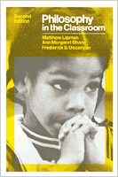

A textbook for teachers that demonstrates how philosophical thinking can be used in teaching children
A textbook for teachers that demonstrates how philosophical thinking can be used in teaching children


 A textbook for teachers that demonstrates how philosophical thinking can be used in teaching children
A textbook for teachers that demonstrates how philosophical thinking can be used in teaching children

|  |
Philosophy in the ClassroomSecond EditionMatthew Lipman, Ann Margaret Sharp and Frederick S. Oscanyanpaper EAN: 978-0-87722-183-8 (ISBN: 0-87722-183-9) |
This is a textbook for teachers that demonstrates how philosophical thinking can be used in teaching children. It begins with the assumption that what is taught in schools is not (and should not be) subject matter but rather ways of thinking. The main point is that the classroom should be converted into a community of inquiry, and that one can begin doing that with children. Based on the curriculum that Matt Lipman has developed at the Institute for the Advancement of Philosophy for Children, which he heads, this book describes the curriculum and explains its use. The text is self-contained, however.
This revision is thorough-going and incorporates new chapters, as well as new material in old chapters. Part One focuses on the need of educational change and the importance of philosophical inquiry in developing new approaches. Part Two discusses curriculum and teaching methodology, including teacher behavior conducive to helping children. Part Three deals with developing logic skills and moral judgment. It concludes with a chapter on the sorts of philosophical themes pertinent to ethical inquiry for children: the right and the fair, perfect and right, free will and determinism, change and growth, truth, caring, standards and rules, thinking and thinking for oneself. Education, in this sense, is not a matter of dispensing information; it is the process of assisting in the growth of the whole individual.
Excerpt available at www.temple.edu/tempress
Preface
Part I: Encouraging Children to Be Thoughtful
1. The Need for Educational Redesign
Educational Dysfunction •
Failure of Remedial Approaches •
Meeting Expectations •
Discovery •
Frustration •
Meaningful Experiences •
Need for Adventure •
Meaning versus Rationality
2. Thinking and the School Curriculum
The Child's Hunger for Meaning •
Thinking Skillfully •
Thinking Skills and Basic Skills •
Thinking Skills and Other Academic Disciplines •
The Relationship between Dialogue and Thinking •
Thinking Well about Things That Matter
3. Philosophy: The Lost Dimension in Education
Philosophy Begins in Wonder •
Wonder and Meaning •
Scientific Explanation •
Symbolic Interpretation •
Philosophical Investigation
4. Some Educational Presuppositions of Philosophy for Children
Preserving the Integrity of Philosophy as a Discipline •
Converting the Classroom into a Community of Inquiry •
Preparing the Teacher and the Curriculum
Part II: Aims and Methods of Philosophy for Children
5. The Philosophy for Children Curriculum
Description of Curriculum •
Aims and Objectives of Philosophy for Children •
Improvement of Reasoning Ability •
Development of Creativity •
Personal and Interpersonal Growth •
Development of Ethical Understanding •
Development of the Ability to Find Meaning in Experience
6. Teaching Methodology: Value Considerations and Standards of Practice
Getting Children to Think for Themselves •
Conditions for Teaching Philosophical Thinking •
Teaching Behavior Conductive to Helping Children Engage in Philosophical Thinking
7. Guiding a Philosophical Discussion
Philosophy and the Strategies of Dialogue •
Guiding a Classroom Discussion •
The Role of Ideas in a Philosophical Dialogue •
Fostering Philosophical Dialogue •
Eliciting Views or Opinions •
Helping Students Express Themselves: Clarification and Restatement •
Explicating Students' Views •
Interpretation •
Seeking Consistency •
Requesting Definitions •
Searching for Assumptions •
Indicating Fallacies •
Requesting Reasons •
Asking Students to Say How They Know •
Eliciting and Examining Alternatives •
Orchestrating a Discussion
Part III: Applying Thinking Skills to School Experience
8. Encouraging Children to Be Logical
Formal Logic as an Aid to Philosophical Thinking •
Giving Reasons: The Good Reasons Approach •
Acting Rationally •
Conclusion
9. Can Moral Education Be Divorced from Philosophical Inquiry
The Presumption of Rationality •
Setting the Stage for Moral Growth •
Socialization and Autonomy in Moral Education •
Dangerous Dichotomies in Moral Education •
What to Do to Help the Children Know What to Do •
Imagination and Moral Education •
Where to Begin •
Why Moral Education Cannot Be Divorced form Philosophical Education •
The Relationship between Logic and Morality •
The Improvement of Moral Judgment
10. Philosophical Themes in Ethical Inquiry for Children
The Relation of Logic to Ethics •
Consistency •
The Right and the Fair •
Perfect and Right •
Free Will and Determination •
Natural •
Change and Growth •
Truth •
Caring •
Standards and Rules •
Questions and Answers •
Thinking and Thinking for Oneself in Ethical Inquiry
Appendix A: The Reform of Teacher Education
Appendix B: Experimental Research in Philosophy for Children
Bibliography
Matthew Lipman is Director of the Institute for the Advancement of Philosophy for Children.
Ann Margaret Sharp, Assistant Director of the Institute, is also co-editor with Matthew Lipman of Growing Up with Philosophy.
Frederick S. Oscanyan is a lecturer in the Department of Philosophy at Yale University.
Education
Philosophy and Ethics
© 2015 Temple University. All Rights Reserved. This page: http://www.temple.edu/tempress/titles/209_reg.html.